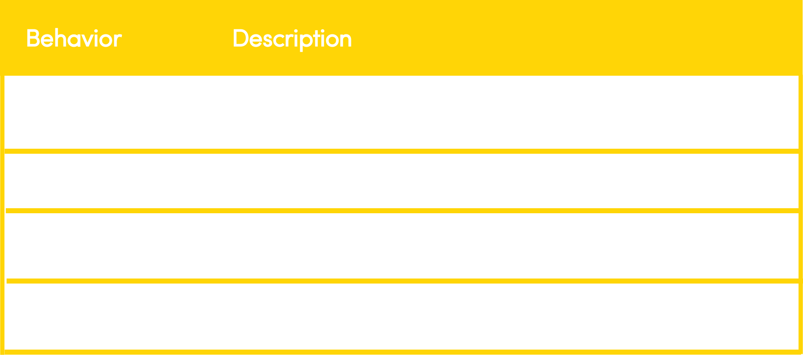
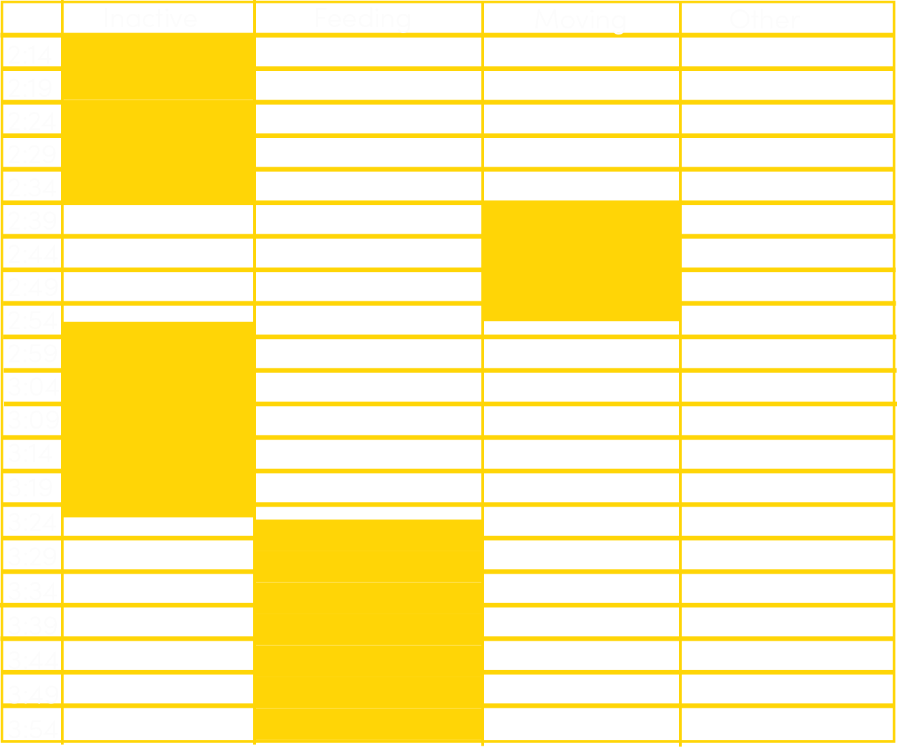
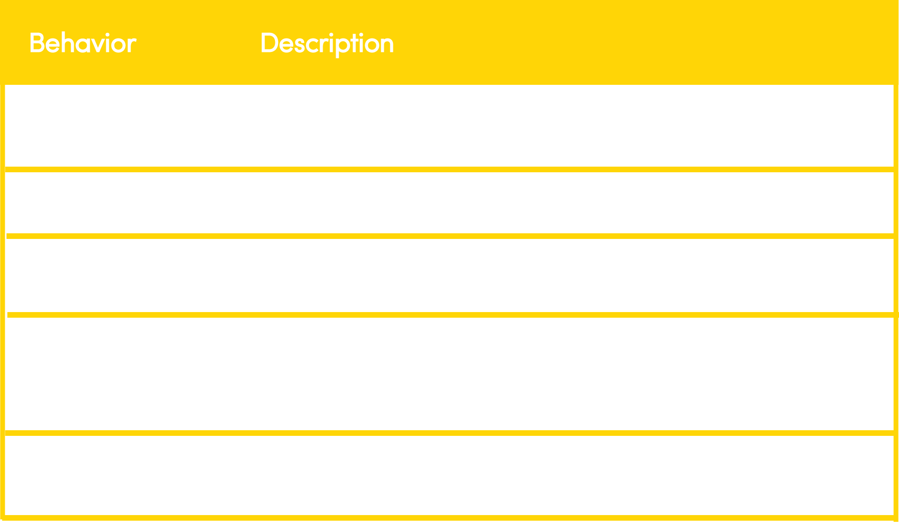

Assignment: Ethogram
In this week, my assignment is to observe two species animals for at least half an hour to record their behaviors. Using the live camera from San Diego Zoo website, I observed the behavior of panda for 1 hour, and elephant for 30 minutes.
Panda(Baiyun) | 2/2/2019 2:14PM - 3:53PM
According to San Diego Zoo website, pandas are not party animals which they love to live alone. So, there is always a low-reproductive-rate problem. Hence, Pandas should be well protected.

I use pen and paper to record Baiyun's behavior and turn it into ethogram via illustrator. Based on “The behavior study and method on the captive giant panda” which written by Zhou in 2004. Pandas’ behaviors included four main type: inactive, feeding, moving and other. According to these behaviors, I made the following ethogram.
Ethogram

Data Recording Graph

Pandas Experts: Dr. Fuwen Wei, Dr. Yaping Zhang
Both Fuwen Wei, a professor in Wildlife Ecology and Conservation at Institute of Zoology, Chinese Academy of Science and Yaping Zhang, Vice president of Chinese Academy of Science are experts at pandas, inferring their evolutionary and demographic process and proposing targeted strategies for pandas' future survival.
Elephants | 2/3/2019 1:55PM - 2:25PM
The elephants I observed born in South Africa’s Kruger National Park and were brought to San Diego in 2003.
I use the software ZoonMonitor to record the behavior of a group of elephants in San Diego Zoo.
Ethogram

Data Recording Graph
The ZooMonitor report graph loading failed. Based on my memory, I made the following graph.
Elepants Experts:Dr. Joyce Poole,Dr. Joshua Plotnik
Dr. Joyce Poole is the co-founder of elepantvoice and she is one of the top elepant research in the world. She did research on elepants'population, age, sex and family structure etc. Dr. Joshua Plotnik is the head of elephant research at the Golden Triangle Asian Elephant Foundation in Thailand and the founder of Think Elephants International.
Conclusion
It’s a lot easier when I only observe and record one animal, such as when I observe Panda Baiyun. However, since I am not familiar with these elephants, it’s easy for me to lose target because I cannot distinguish them, especially when I use live camera to observe yet actually go to the zoo by myself. The software ZooMonitor is hard to use at first, even though it has an instruction. The software can automatically generate a data graph(although it's not working), which is better than pen/paper. But once I uploaded the data, I cannot find the data I record, and I do not know what time and what the elepants' behavior is. I think the software is hard to use. Therefore, I think I go to zoo personally to observe the animal.
And I think it will be cool if the monitor is AI-driven. Then the machine can become smarter and more accurately to monitor animals' behaviors via their every single movement and facial epression.